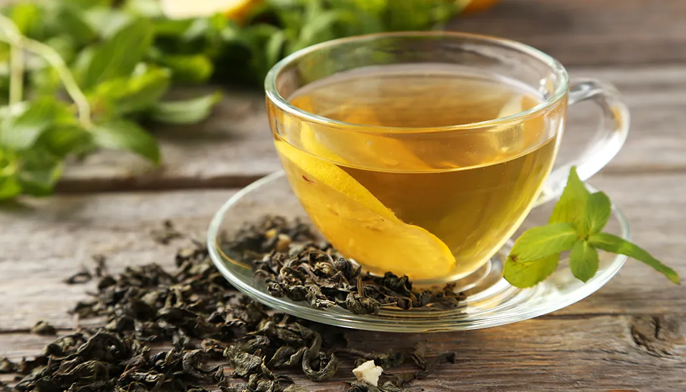

Green Tea
Nature preserved in every leaf — fresh, grassy, and bursting with antioxidants from Sri Lanka's misty highlands.
0%
Oxidized
2–3 min
Brew Time
75–80°C
Water Temp
20–45mg
Caffeine / Cup
Freshness in Every Sip
Green tea is made from leaves that are rapidly heated after plucking — either by steaming or pan-firing — to prevent oxidation. This locks in the leaf's natural green color, fresh grassy aroma, and an extraordinary concentration of health-promoting polyphenols called catechins.
Ceylon green tea is distinct from its Chinese or Japanese counterparts. Grown at elevations above 1,200 metres in regions like Nuwara Eliya and Dimbula, it carries a brighter, more vegetal character with a clean, slightly astringent finish that is deeply refreshing when served chilled.
In recent years Ceylon green tea has gained tremendous global popularity as awareness of its health benefits has grown, making it one of the fastest-growing segments of Sri Lanka's tea export market.
Flavor, Aroma and Character
Taste
Fresh, grassy, and clean with a pleasant vegetal sweetness. A gentle astringency develops at the end, leaving a refreshing, lingering aftertaste. Ceylon green teas are typically lighter and more delicate than Asian varieties.
Aroma
Bright, fresh, and herbaceous. The scent evokes a walk through a dewy highland garden — notes of fresh-cut grass, spring flowers, and clean mountain air. Steamed varieties carry a more pronounced fresh note.
Liquor Color
Pale yellow to light green, translucent and clear. The color is an indicator of quality — a brighter, more vibrant cup signals a higher-grade, carefully handled tea with minimal exposure to heat during processing.
How to Brew Green Tea
Use Cooler Water
Heat water to 75–80°C — never boiling. Boiling water scorches green tea leaves and makes the brew bitter. Let boiled water cool for 3–4 minutes before using.
Use 1 Tsp per Cup
Measure 1 teaspoon (2g) of loose leaf green tea per 200ml of water. Green tea leaves are lighter, so resist the urge to add more.
Steep Only 2–3 Minutes
Green tea steeps faster than black. Remove the leaves after 2 minutes for a lighter cup or 3 minutes for more intensity. Over-steeping causes harsh bitterness.
Enjoy Straight
Best enjoyed without milk. Try it with a small drizzle of honey or a slice of lemon to complement its natural freshness. Excellent iced in summer.
Health Benefits
Highest Antioxidant Content
Green tea contains EGCG (epigallocatechin gallate), one of the most powerful antioxidants known, which helps protect cells from damage.
Boosts Metabolism
Studies suggest green tea can increase fat burning and metabolic rate, making it a popular choice for weight management.
Calming Alertness
L-theanine works synergistically with caffeine to produce calm, focused energy without anxiety or restlessness.
Supports Brain Health
Regular consumption is associated with improved memory, reduced risk of cognitive decline, and neuroprotective benefits.